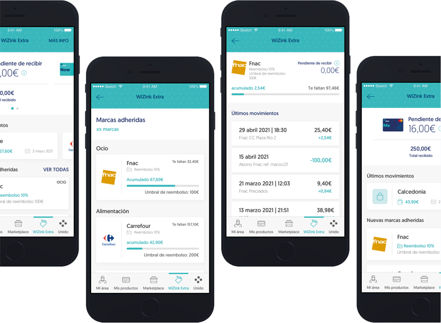

Nuestro programa de beneficios es otro nivel. Exprime todo el potencial de tu tarjeta de crédito WiZink y recupera dinero de tus compras en una gran lista de comercios adheridos. ¡Y sin hacer ninguna gestión de registro o descarga de cupones!
Este programa es completamente gratuito para ti, vamos, que podrás disfrutar de sus ventajas por la cara. Y además todas las devoluciones que recibas serán en cash, en dinerito.
¡Esto va de acumular y de no perder nada!Todo depende de tus compras y del importe que gastes, puedes recibir infinitos abonos de cada comercio y acumular descuentos, porque no caducan.
Sabemos qué hacer gestiones, imprimir cupones y canjear códigos no es tan divertido como ir de compras, así que no hace falta que hagas nada especial. Acumularás tus descuentos automáticamente en cada una de ellas
Ejemplo: Un comercio ofrece un 5% de reembolso y 10€ de umbral de reembolso, un máximo a acumular en cada compra de 2,5€. En tu primera compra de 50€, obtendrás 2,5€ que se acumularán. Cuando gracias a tus siguientes compras llegues a un acumulado de 10€… todo tuyos, te los abonaremos automáticamente en tu tarjeta.
El nuevo programa de beneficios ya está disponible en todas las tarjetas WiZink ¿A qué esperas? Comienza a disfrutar de Extra es FáZil, gratis y automático.
Todos, hasta los titulares de tarjetas adicionales. Sus compras en comercios adheridos se acumulan a los del principal. ¡Mucho más fáΩil conseguir tu Extra!
En el apartado WiZink Extra encontrarás todos los detalles de este programa: la cantidad de dinero que llevas acumulada en cada comercio, el importe que ya has recibido y la cantidad pendiente de abonar.
Ejemplo : una marca ofrece un 5% de devolución y 10€ de umbral de canje. En tu primera compra de 100€ obtienes 5€, que se guardan. Cuando acumulas 10€, ya son tuyos, te los abonaremos automáticamente en tu tarjeta en el plazo que corresponda según el tipo de comercio.
Al umbral puedes llegar con una única compra o en varias.
En la actualidad puedes recuperar dinero en 77 comercios adheridos de 12 sectores diferentes. Pero esto es solo el principio, ¡iremos incorporando nuevas marcas al programa!
Aquí puedes ver el listado completo, que siempre encontrarás actualizado en nuestra web y en la App / sección “WiZink Extra”.
Nada, es automático. Una vez alcanzado el umbral de canje, el plazo de abono depende del tipo de comercio:
· Si se trata de un restaurante o un servicio donde no existe la posibilidad de devolución de la compra, recibirás tu abono al mes siguiente, el día 15
· Para el resto de los casos, tendrás que esperar hasta el siguiente mes.
Esto es así para respetar los plazos de devolución de compra de las distintas marcas..
En la sección WiZink Extra de la App. Verás la transacción que ha generado la devolución y el importe que te corresponde, lo que lleves acumulado en cada comercio y en el total del programa y el dinero que hayas recibido ya y lo que estamos pendientes de abonarte.
Sí, las compras de las tarjetas adicionales en los comercios adheridos se acumulan con las del principal. Así es más fácil alcanzar el umbral de canje.
La cantidad que habías acumulado en el programa por esa compra se descuenta..